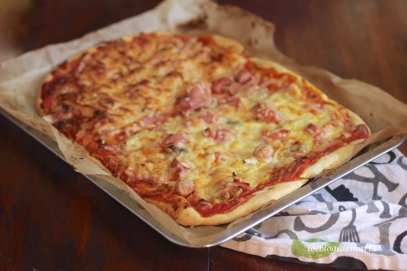

Pizza

Description
Pizza is a dish of Italian origin consisting of a usually round,
flat base of leavened wheat-based dough topped with tomatoes, cheese,
and often various other ingredients
Ingredients
For the base:
- 300g of bread flour
- 1 tsp instant yeast (from a sachet or a tub)
- 1 tsp salt
- 1 tbsp olive oil for drizzling
For the tomato sauce:
- 100 ml passata
- handful fresh basil or 1 tsp dried
- 1 garlic glove, crushed
For the topping:
- 125 g ball mozzarella, sliced
- handful grated or shaved parmesan (or vegetarian alternative)
- handful of cherry tomatoes, halved
To finish:
- handful of basil leaves (optional)
Steps
- Make the base: Put the flour into a large bowl,
then stir in the yeast and salt. Make a well,
pour in 200ml warm water and the olive
oil and bring together with a wooden spoon
until you have a soft, fairly wet dough.
Turn onto a lightly floured surface and knead
for 5 mins until smooth. Cover with a tea towel
and set aside. You can leave the dough to rise
if you like, but it's not essential for a thin crust.
- Make the sauce: Mix the passata, basil and
crushed garlic together, then season to taste.
Leave to stand at room temperature while you get
on with shaping the base.
- Roll out the dough: if you've let the dough rise,
give it a quick knead, then split into two balls.
On a floured surface, roll out the dough into large
rounds, about 25cm across, using a rolling pin.
The dough needs to be very thin as it will rise
in the oven. Lift the rounds onto two floured
baking sheets.
- Top and bake: heat the oven to 240C/220C fan/gas 8.
Put another baking sheet or an upturned baking tray
in the oven on the top shelf. Smooth sauce over bases
with the back of a spoon. Scatter with cheese
and tomatoes, drizzle with olive oil and season.
Put one pizza, still on its baking sheet,
on top of the preheated sheet or tray.
Bake for 8-10 mins until crisp.
Serve with a little more olive oil, and basil leaves
if using. Repeat step for remaining pizza.